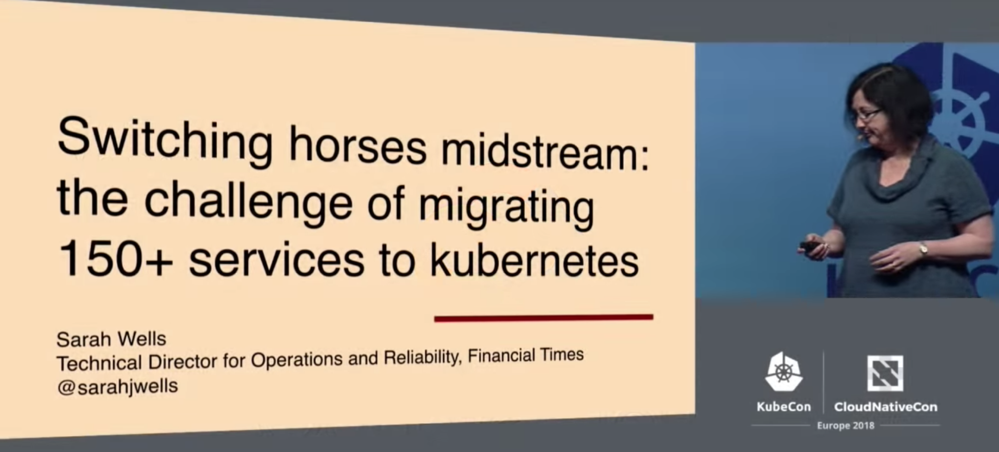
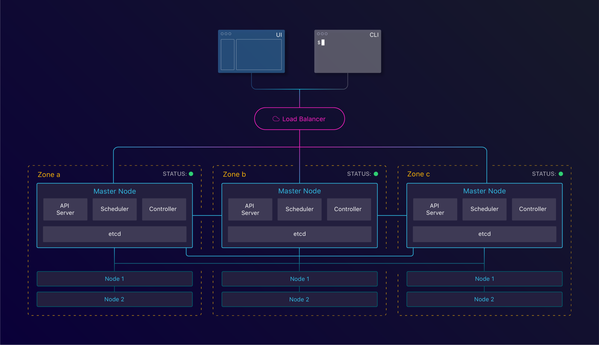
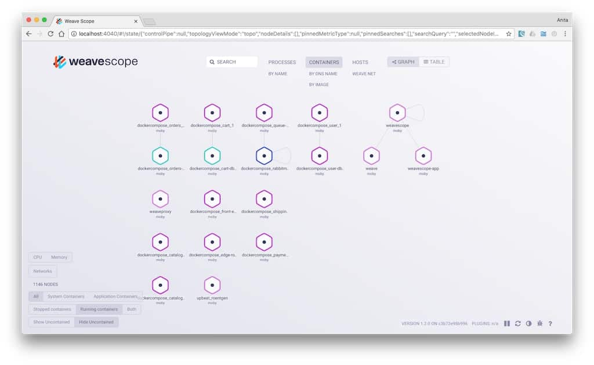

MAINTAINER Michal Wojtowicz michal@wojtowicz.ovh
Michal Wojtowicz
Senior Software Engineer @ Pitney Bowes
The real value of Docker is not technology, it's getting people to agree on something~ Solomon Hykes (CEO of Docker) @ Dockercon 2014
#docker has now had more security issues within a year then #freebsd #jails has had since 2000. Good job #techbros. http://t.co/Qx6OMjmqlI
— Benjamin Perrault (@creepingfur) 2014-12-13
Agenda
- Czym jest Docker?
- Czym jest kontener?
- Kernel namespaces
- Docker image
- Docker compose
Produkty firmy Docker Inc.
- libcontainerd (Docker engine)
- Docker registry
- Docker hub
- Docker machine
- Docker-compose
- Docker swarm
Czym jest Docker? (#1)
- technologia wirtualizacji
- tworzy kontenery z wyizolowanym softem
- działa na każdej platformie
- tworzy takie samo środowisko w każdych warunkach
Czym jest Docker? (#2)
- upraszcza tworzenie, build and dostarczanie softu
- pojedynczy build zawiera tylko twój kod i ewentualnie liby/zależności
- opiera się na Open Container Initiative (projekt Linux Foundation)
Alternatywy dla Dockera
- LXC - 2008 by the Kernel authors
- Linux VServer - 2008
- LXD - 2014 by Canonical
- rkt - 2014 by CoreOS
- Windows Containers - 2016
Architektura Dockera

Czym jest kontener?
Czym jest kontener?
Wygląda jak VMka:
- własna przestrzeń procesów
- własna sieć
- można korzystać z konta root
- można instalować pakiety (yum/apt-get)
- można sterować servicami
Czym jest kontener?
Ale jednak to nie VMka:
- współdzieli kernel hosta
- nie uruchomi innych systemów operacyjnych
- uruchamia się błyskawicznie
- nie emuluje sprzętu
Czym kontenery różnią się od VMek?

Czym kontenery różnią się od VMek?

Jak to działa? - Linux
- wspóldzielą z hostem kernel
- zawsze wspóldzielą Linux kernel
Jak to działa? - OSX i Windows
- wymaga dodatkowej VMki z Linux Kernel
- Hyper-V dla Windows 10
- HyperKit dla macOS od 10.10 (Yosemite)
- Docker-machine (na Virtualbox) dla wcześniejszych wersji
Kernel namespaces - o co chodzi?
Każdy proces jest powiązany z konkretną przestrzenią nazw. Może korzystać tylko z tych zasobów, które są częścią tej samej przestrzeni nazw, lub jej potomnych.
PID namespace
- procesy mogą się "widzieć" w ramach tej samej PID namespace
- pierwszy proces w przestrzeni ma przypisany PID=1
Net namespace
Pozwala na tworzenie całych infrastraktór sieciowych, włączając:
- interfejsy
- tabele routingu
- reguły firewalla
- sockety
Mnt namespace
- izoluje punkty montowania dla procesów
- umożliwia różne "widoki" na pliki hosta
- punkty montowania mogą być współdzielone
UTS namespace
izoluje hostname oraz NIS domain name
ipc namespace (interprocess communication)
- semafory
- POSIX message queues
- pamięć współdzielona
user namespace
- tabela IDków użytkowników systemu
- mapuje użytkownika kontenera na użytkownika hosta
- używana do izolacji przywilejów
Co nie znajduje się w przestrzeniach nazw?
- czas - spróbuj go zmienić z poziomu kontenera
/ # whoami
root
/ # uname -a
Linux 51a456ca0479 3.10.0-693.11.6.el7.x86_64 #1 SMP Thu Jan 4 01:06:37 UTC 2018 x86_64 Linux
/ # date +%T -s "10:13:13"
date: can't set date: Operation not permitted
- kernel keyring - syscalle są zablokowane
- wszystko pod ścieżką /sys/
Filozofia jednej usługi (procesu) na kontener
- prostsze do skalowania
- prostsze w utrzymaniu
- brak problemu zabicia procesu nr 1
- większy wysiłek w konfiguracji niż VMki
Docker image
Czym jest docker image?
- nakładka na kernel
- zawiera liby i/lub binarki
- definiuje porty wyeksponowane na świat, workdir
- uruchamia domyślny proces w kontenerze
Co znajduje się wewnątrz docker image?
- zależności konkretnej dystrybucji linuxa przykład - Ubuntu
- zbudowane zależności dla aplikacji
- wszystko jest spakowane używając warstwowego systemu plików
- obrazy są tylko do odczytu
Jak stworzyć własny docker image?
Składnia Dockerfile
FROM <image>[:<tag>] # obraz bazowy
RUN <command> # wołane jednorazowo, w trakcie buildu
CMD command param1 param2 # wołane przy starcie kontenera
EXPOSE <port> [<port>/<protocol>...]
ENV <key> <value> # tylko wewnątrz kontenera
ADD [--chown=<user>:<group>] <src>... <dest>
COPY <src>... <dest>
ENTRYPOINT command param1 param2 # kontener jako binarka
VOLUME ["/data"]
USER <user>[:<group>] # kto woła komendy
WORKDIR /path # gdzie uruchamiać komendy
HEALTHCHECK [OPTIONS] CMD command
$ docker build .Sending build context to Docker daemon 15.36 kB
Step 1/4 : FROM alpine:3.2
---> 31f630c65071
Step 2/4 : MAINTAINER forest.gump@example.com
---> Using cache
---> 2a1c91448f5f
Step 3/4 : RUN apk update && apk add apache2 && rm -r /var/cache/
---> Using cache
---> 21ed6e7fbb73
Step 4/4 : CMD apache2
---> Using cache
---> 7ea8aef582cc
Successfully built 7ea8aef582cc

Multistage build (Docker >= 17.05)
FROM maven:3.5-jdk-8 as BUILD
COPY src /usr/src/myapp/src
COPY pom.xml /usr/src/myapp
RUN mvn -f /usr/src/myapp/pom.xml clean package
FROM tomcat:8.0-alpine
COPY --from=BUILD \
/usr/src/myapp/target/people-1.0-SNAPSHOT.war \
/usr/local/tomcat/webapps/myapp.war
Uruchamianie kontenera
$ docker run -it ubuntu:14.04 /bin/bash
$ docker run -it tomcat -d -p 8080:80
Docker-Compose na ratunek
version: '3'
services:
web:
image: apache
links:
- database
ports:
- '8080:80'
volumes:
- ./project:/var/www:rw
database:
image: mysql$ docker-compose upPlusy korzystania z Dockera
Docker security
Docker security - aktualizacje
- update kernela zależy od hosta, nie dockera
- zależności instalowane wewnątrz obrazu są utrzymywane przez twórcę obrazu
Docker security - pozbądź się przywilejów roota
- wdrażaj zasadę najwęższych potrzebnych uprawnień
- Docker wymaga przywilejów roota by działać, kontenery nie
- procesy działające wewnątrz kontenera niczym się nie różnią od innych
- większość obrazów działa na uprawnieniach roota i zostawiają TOBIE co z tym zrobić
$ sudo echo "SECRET STRING" > /root/secretFile.txt
$ docker run -v /root:/tmp/rootdir alpine:latest ls -la /tmp/rootdir
drwxr-xr-x+ 126 root root 4032 Jun 21 13:43 .
drwxr-xr-x 7 root root 224 Jun 15 12:31 ..
-rw-r--r-- 1 root root 266 Nov 26 2017 secretFile.txt
FROM anyimage:latest
RUN groupadd -g 999 appuser && \
useradd -r -u 999 -g appuser appuser
USER appuserKolejny krok - orchestration
- Docker Swarm
- Kubernetes
- AWS/Azure/Google solutions
Agenda
- Architektura Kubernetes
- Wzorce projektowe
- Obiekty Kubernetes
Container orchestration
- montowanie wolumenów
- load balancing
- skalowanie poziome
- monitoring
- secret distribution
- aktualizacje (rollbacki)
- logi
Czy warto?
Financial Times
Financial Times
Using leading edge technologies requires you to be comfortable with change~ Sarah Wells (@sarahjwells)
Financial Times
80% redukcji kosztów infrastruktury
Wzorce projektowe
Sidecar
- dodatkowy kontener w ramach poda
- realizuje dodatkową funkcjonalność
- „główny” kontener nie jest świadomy istnienia pomocnika
Ambassador
- reprezentuje zdalny zasób jako lokalny
- używany jako proxy, lub w razie potrzeby wdrożenia uprawnień
- „główny” kontener nie jest świadomy istnienia pomocnika
Adapter
- standaryzuje wyjście kontenera
- używany wtedy, gdy wiele kontenerów w ramach poda musi przejść update wnoszący breaking change między nimi
Obiekty Kubernetes - #1
- Pod
- Volume
- Namespace
- Service
Obiekty Kubernetes - #2
- ReplicaSet
- Deployment
- StatefulSet
- DaemonSet
- Job
Pod
- jeden lub więcej kontenerów
- ma swój IP
Volume
- zasób dyskowy
- montowany do kontenerów
- może być współdzielony
Namespace
- wirtualizacja klastra na jednym fizycznym klastrze
Service
- logiczna jednostka
- zarządza jednym lub więcej podów
- pilnuje reguł dostępu do podów z zewnątrz
ReplicaSet
- obiekt nadrzędny nad Podem
- pilnuje, żeby żądana ilość podów działała w danej chwili
Deployment
- obiekt nadrzędny nad Podem i ReplicaSet
- definiuje stan
- update podów
- rollback podów
StatefulSet
- zarządza deploymentem i skalowaniem grupy podów
- gwarantuje unikalność podów
- gwarantuje stałą tożsamość podów
DaemonSet
- uruchamia kopię danego poda na każdym node
Job
- tworzy jeden lub więcej podów
- każdy z podów wykonuje zadany proces
- pilnuje, żeby zadana liczba podów ukończyła pracę pomyślnie
Wystarczy że nauczę się Kubernetes?
High availibility
kops
- tworzenie, usuwanie, upgrade i zarządzanie klastrów
- production-grade, highly available
- wspiera AWS
- Google Cloud Platform - beta
Service mesh
Service mesh
- warstwa abstrakcji pomiędzy usługami
- odpowiada za routing ruchu, load balancing
- dba o service discovery
- support dla circuit break
Package managers
(tak jak yum/apt/homebrew, tylko dla Kubernetes)Helm

Monitoring
Weave Scope
Chaos engineering
Chaos Engineering is the discipline of experimenting on a distributed system in order to build confidence in the system’s capability to withstand turbulent conditions in production.~ principlesofchaos.org
Powerful Seal
Post-mortem
akaretro-blame-spective
akaincident report
Powtórka
Czym jest docker?
- program do obsługi kontenerów
- open-source, ma konkurencję
- działa na każdym systemie operacyjnym
Czym jest kontener?
- ma wszystko co potrzebne do uruchomienia aplikacji
- nie jest zależny od systemu opracyjnego
- nie ma tam zbędnych binarek
- jest lekki
Jak tworzyć Docker images?
- składnia Dockerfile
- kontenery muszą być stateless
- ogranicz build context
- pilnuj uprawnień (security)
- korzystaj z multi-stage builds
Pytania?
Dzięki za poświęcony czas!
Slajdy są dostępne na
https://michailw.github.io/talks/docker&k8s/